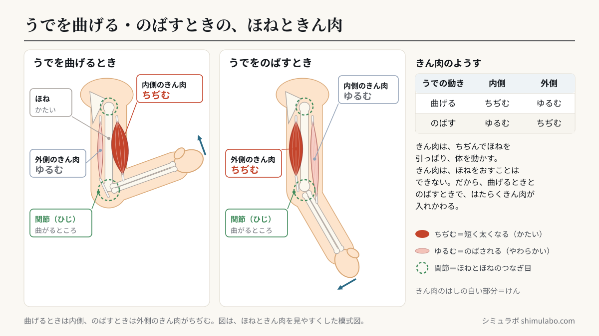
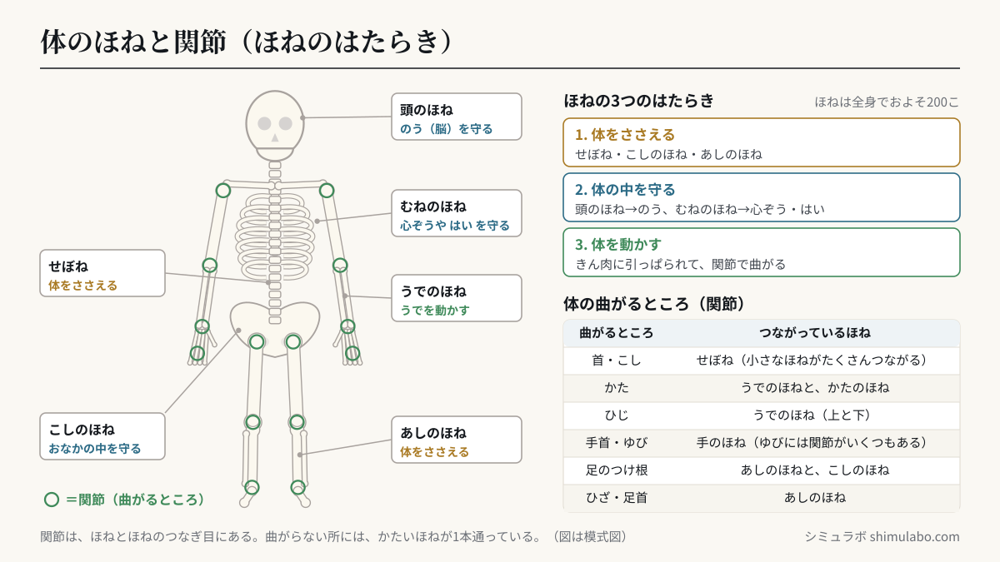

このシミュレーションでわかること
うでを曲げるときは、うでの内側のきん肉がちぢみ、外側のきん肉がゆるみます。のばすときは、その反対に外側のきん肉がちぢみ、内側のきん肉がゆるみます。きん肉はちぢんでほねを引っぱり、うではほねとほねのつなぎ目（関節）のところで曲がります。全身のほねの図では、ほねには「体をささえる」「体の中を守る」「きん肉といっしょに体を動かす」はたらきがあることを、関節さがしクイズでは、体の曲がるところと曲がらないところを確かめられます。ウサギにも、人と同じようにほね・きん肉・関節があります。
授業での使い方
導入：自分の体にさわって予想する
うでを曲げたりのばしたりしながら、うでをさわらせます。「かたい所とやわらかい所があるね。うでの中はどうなっているのだろう」と問いかけ、ノートに「うでの中のようす」を絵でかかせます。そのあと「💪 うで」の図を見せて、自分の絵と比べさせます。
展開：曲げる・のばすときのきん肉を調べる
うでの図の手を指で動かして、ひじを曲げたりのばしたりします。曲げると内側のきん肉が赤く太くなり（ちぢむ）、外側はうすい色で細くなります（ゆるむ）。実際に、反対の手で内側と外側のきん肉をさわりながらうでを曲げのばしし、かたさの変わり方を確かめます。「🏋️ おもりを持つ」で、物を持ち上げるときに内側のきん肉がもっとかたくなることも話し合えます。
まとめ：関節さがし・全身のほね・動物
「❓ 関節さがし」で、体の曲がるところ（関節）をタップしてさがします。曲がらない所をタップすると「中にかたいほねが1本通っている」と出るので、曲がるところ＝ほねとほねのつなぎ目であることに気づかせます。「🦴 全身のほね」でほねのはたらきを整理し、「🐰 ウサギ」で、学校で飼っている動物にもほね・きん肉・関節があることを確かめます。
児童への問いの例
- うでを曲げるとき、内側のきん肉と外側のきん肉は、それぞれどうなっているだろう？
- 体の曲がるところと曲がらないところでは、中のほねのようすはどうちがうだろう？
- ウサギが大きくジャンプできるのは、体のどこがどのようにはたらいているからだろう？
しくみ・解説






図はタップすると大きく表示されます。授業のプリント・スライド・板書計画に自由に使えます（出典「シミュラボ」とページのURLを添えてください）。
言葉の意味（1文で）
- ほね（骨）とは、体の中にあるかたい部分で、体をささえたり、体の中を守ったりしています。
- きん肉（筋肉）とは、ほねについているやわらかい部分で、ちぢんだりゆるんだりして、ほねを動かします。
- 関節とは、ほねとほねのつなぎ目で、体が曲がるところのことです。
- ちぢむとは、きん肉が短く太くなって、ほねを引っぱることです（このとき、さわるとかたくなります）。
- ゆるむとは、きん肉が力をぬいて、のばされている状態のことです（さわるとやわらかいです）。
うでを曲げる・のばすときのきん肉（早見表）
| うでの動き | 内側のきん肉 | 外側のきん肉 | ほねの動き |
|---|---|---|---|
| うでを曲げる | ちぢむ（太く、かたくなる） | ゆるむ（のびて、やわらかい） | 内側のきん肉が下うでのほねを引っぱる |
| うでをのばす | ゆるむ（のびて、やわらかい） | ちぢむ（太く、かたくなる） | 外側のきん肉がひじの後ろのほねを引っぱる |
| 物を持ち上げる | ちぢむ（もっとかたくなる） | ゆるむ | 重い物ほど、内側のきん肉が強くはたらく |
きん肉は、自分でちぢむことはできますが、自分でのびてほねをおすことはできません。そのため、うでには内側と外側の2つのきん肉があり、曲げるときと、のばすときで、はたらくきん肉が入れかわります。
おもなほねとはたらき（早見表）
| ほね | ある場所 | おもなはたらき |
|---|---|---|
| 頭のほね | 頭 | のう（脳）を守る |
| せぼね | せなかのまん中 | 体をささえる・体を曲げたりひねったりできる |
| むねのほね（ろっこつ） | むね | 心ぞうや はい（肺）を守る |
| こしのほね | こし | 上の体をささえる・おなかの中を守る |
| うでのほね | うで | きん肉に引っぱられて、うでを動かす |
| あしのほね | あし | 体の重さをささえる・歩く、走る |
人の体には、ほねがおよそ200こあります（大人で約206こ）。いちばん長いほねは太もものほね、いちばん小さいほねは耳の中にあるほねです。
体の曲がるところ（関節）
| 曲がるところ | つながっているほね |
|---|---|
| 首・こし | せぼね（小さなほねがたくさんつながっている） |
| かた | うでのほねと、かたのほね |
| ひじ | うでのほね（上と下） |
| 手首・ゆび | 手のほね（ゆびには関節がいくつもある） |
| 足のつけ根 | あしのほねと、こしのほね |
| ひざ・足首 | あしのほね |
先生向けの補足：筋肉は腱で骨についている
図の「内側の筋肉」は上腕二頭筋（いわゆる力こぶ）、「外側の筋肉」は上腕三頭筋にあたります。一方が縮むとき他方がゆるむ組み合わせ（拮抗筋）になっています。教科書では「内側の筋肉」「外側の筋肉」と表すことが多いため、児童向けの表記はそれに合わせています。
筋肉は縮むときにだけ力を出します（引っぱることはできても、おすことはできません）。そのため、曲げる筋肉とのばす筋肉が対になってはたらきます。第6学年「人の体のつくりと働き」、中学校第2分野「動物の体のつくりと働き」（運動器官）につながる内容です。
このシミュレーションで単純化していること
- うでの図は、ほね・きん肉を見やすくするため、皮ふをすかして、主なほねと2つのきん肉だけをかいています。実際には、うでにはもっと多くのきん肉があります。
- きん肉が「ちぢむ・ゆるむ」は、うでを曲げているか、のばしているか（最後に動かした向き）で切りかえています。うでを止めたまま力を入れたときのようすは表していません。
- 全身のほねの図は、主なほねだけを簡単な形でかいています。手や足の小さなほね、頭のほねのつなぎ目などは省いています。
- ウサギの図は、ほね・きん肉の位置を簡単にした模式図です。
参考
- 文部科学省「小学校学習指導要領（平成29年告示）解説 理科編」第4学年 B（1）人の体のつくりと運動（小学校学習指導要領・解説）
- 小学校理科の教科書（第4学年「人の体のつくりと運動」「ほねときん肉」の単元）
引用・転載について
本ページのシミュレーション結果・数値は、出典を明記いただければブログ・ニュース記事・SNS・授業や社内資料への引用を歓迎します。事前連絡は不要です。
出典：シミュラボ「ほねときん肉のシミュレーター（うでの曲げのばし・関節）」 https://shimulabo.com/sims/hone-kinniku/よくある質問
- うでを曲げるとき、きん肉はどうなっていますか？
- うでの内側のきん肉がちぢみ（太く、かたくなる）、外側のきん肉がゆるみます。ちぢんだ内側のきん肉が下うでのほねを引っぱるので、うでがひじの関節のところで曲がります。
- うでをのばすとき、きん肉はどうなっていますか？
- 曲げるときと反対に、外側のきん肉がちぢみ、内側のきん肉がゆるみます。きん肉はちぢんでほねを引っぱることしかできないので、曲げるきん肉とのばすきん肉が入れかわってはたらきます。
- 関節とは何ですか？
- ほねとほねのつなぎ目で、体が曲がるところのことです。かた・ひじ・手首・ゆび・足のつけ根・ひざ・足首などにあります。首やこしは、せぼねの小さなほねのつなぎ目で曲がります。
- ほねにはどんなはたらきがありますか？
- 体をささえるはたらき（せぼね・こしのほね・あしのほね）、体の中を守るはたらき（頭のほねがのうを、むねのほねが心ぞうや肺を守る）、きん肉といっしょに体を動かすはたらきがあります。
- きん肉はほねにどうやってついていますか？
- きん肉のはしは「けん（すじ）」というじょうぶな部分になっていて、関節をまたいで2つのほねについています。かかとのアキレスけんは、ふくらはぎのきん肉をかかとのほねにつなぐけんです。
- ウサギなどの動物にも、ほねやきん肉はありますか？
- あります。ウサギにも、頭のほね・せぼね・むねのほね・あしのほねと、きん肉・関節があり、人と同じように、ほねときん肉のはたらきで体を動かします。ウサギは後ろあしが長く、きん肉が大きいので、大きくジャンプできます。